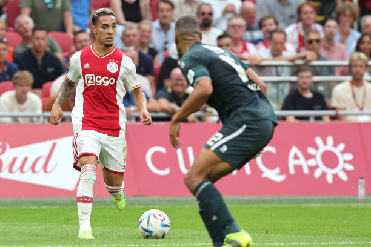
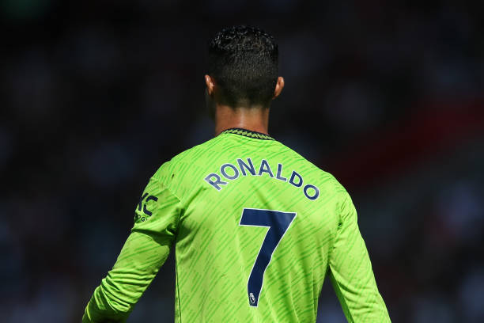

Sau quãng thời gian dài nỗ lực, rốt cuộc thì
Đây đã là thương vụ thứ năm được Man Utd thực hiện trong kỳ chuyển nhượng mùa Hè, với tổng cộng gần 250 triệu euro được họ 'rót' vào TTCN. Vì vậy, gần như chắc chắn

Sau khi bị hàng loạt câu lạc bộ lớn khước từ, mới đây, hy vọng đã lóe lên cho ngôi sao người Bồ Đào Nha với một động thái khá bất ngờ đến từ Napoli. Cụ thể, đội bóng xứ Naples sẵn sàng chiêu mộ Ronaldo thông qua một thương vụ trao đổi cùng Man Utd, với Victor Osimhen chuyển đến Old Trafford, và họ muốn nhận được CR7 cùng với 100 triệu euro.
Nghe có vẻ lố bịch, nhưng theo tiết lộ từ La Gazzetta dello Sport thì đội chủ sân Old Trafford cũng đã cân nhắc đến viễn cảnh chiêu mộ Osimhen, nhưng chỉ trong trường hợp họ không chiêu mộ được Antony. Còn giờ đây, chân sút người Brazil

Với Ronaldo, tình hình tại Old Trafford dự kiến sẽ còn trở nên khó khăn hơn với anh trong thời gian tới. Với sự hiện diện của Antony - một cầu thủ chạy cánh thực thụ, không loại trừ khả năng HLV Erik Ten Hag sẽ bố trí Marcus Rashford thi đấu cố định ở vị trí tiền đạo trung tâm. Vì vậy, cơ hội ra sân của CR7 chắc chắn sẽ giảm đi đáng kể, và có lẽ anh cũng sẽ phải gắn bó với băng ghế dự bị trong suốt mùa giải năm nay.
Số phận của Ronaldo sẽ được định đoạt trong vòng 5 ngày tới, trước khi TTCN đóng cửa. Giờ đây, có lẽ Sporting Lisbon là bến đỗ duy nhất mà CR7 có thể chuyển đến sau khi rời khỏi Old Trafford. Tuy vậy, chắc chắn là anh sẽ phải cắt giảm một mức lương khổng lồ nếu muốn trở về chơi bóng tại quê nhà.